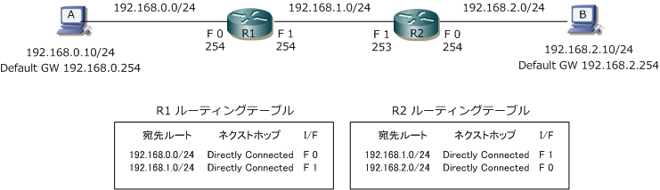
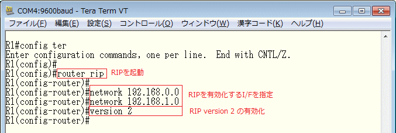
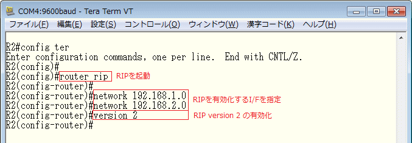
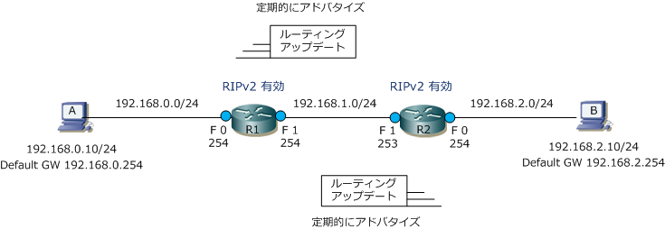
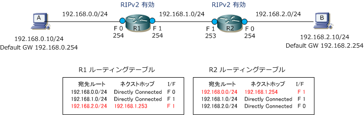
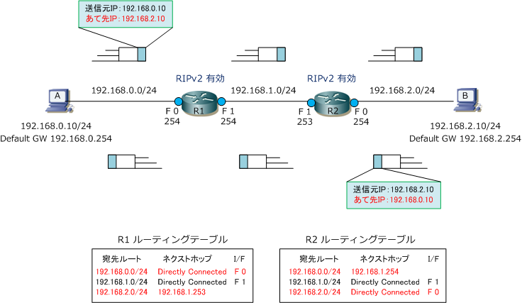

Dynamic Routing
ダイナミックルーティングとは
ダイナミックルートとは、ルータで設定されたルーティングプロトコルで動的に追加されるルートのこと。 ダイナミックルートの情報は、ルータで設定されたルーティングプロトコルの動作に従って他のルータに 対して自動的に通知されます。また、ネットワークの状態に変化があった場合、他に有効な宛先ルートが あれば自動的にそのルートに切り替わります。ネットワーク経路の追加、変更等は全て動的に伝わります。 ルータでルーティングプロトコルを使用したルーティングのことをダイナミックルーティングと言います。
| 比較項目 | スタティックルーティング | ダイナミックルーティング |
|---|---|---|
| ルートの設定方法 | 管理者が手動で設定 | ルーティングプロトコルにより動的に追加 |
| ネットワーク状態の変化時 | 宛先ルートに変化なし | 宛先ルートが動的に更新される |
| ルータの負荷 | 負荷はない | ルーティングプロトコルでCPUとメモリをやや消費 |
| 管理者の負荷 | ネットワークが大きい場合、設定する ルート数が多くなり、設定の手間がある |
複雑なネットワークの場合においては ルーティングプロトコルの深い知識が必要となる。 |
ルーティングプロトコルの設定
ルーティングプロトコルにはRIP、EIGRP、OSPF、IS-IS、BGPなどの種類があります。今回は、RIPv2を 使用してどのような設定が必要になるのか、ダイナミックルートがどのように追加されるのかを解説します。
下図では、それぞれのルータの I/F にIPアドレスの設定と有効化（ no shutdown ）をしている状態です。 この時点でルータは直接接続ルートを追加することになるので、ルーティングテーブルは下図の通りです。 この状態ではルーティングテーブルどおり端末AからBにパケットを送信しても届きません。なぜならR1の ルーティングテーブルには宛先IPアドレス「192.168.2.10」に該当する宛先ルートが存在しないからです。

端末AとBが通信できるように、R1とR2のルータでRIPv2を有効にし、RIPv2を有効化させるI/Fを指定します。



上記のように設定すると、R1とR2それぞれが自身のルーティングテーブルにある経路情報を、ルーティング アップデートとして隣接ルータに通知（アドバタイズ）します。結果、R1は自身のルーティングテーブルには ない「192.168.2.0/24」の宛先ルートをルーティングテーブルに登録し、同様にR2は「192.168.0.0/24」の 宛先ルートをルーティングテーブルに登録します。その結果、ルーティングテーブルは下図の通りになります。

下図は、端末A ⇔ B間で双方向に通信している様子を表したものです。下図で、赤字にしている部分が実際に パケットの着信時に参照されるルーティングテーブルの該当箇所となっています。ダイナミックルーティング の場合、通信させたいネットワークのインターフェースを有効化すれば自動的に経路情報がアドバタイズされて いくのでスタティックルーティングのようにネクストホップのアドレスを確認しながら1つ1つ指定する必要が ありません。大規模ネットワークでは、ダイナミックルーティングプロトコルを使用することが適しています。
